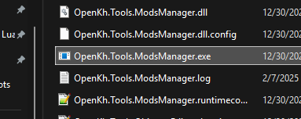
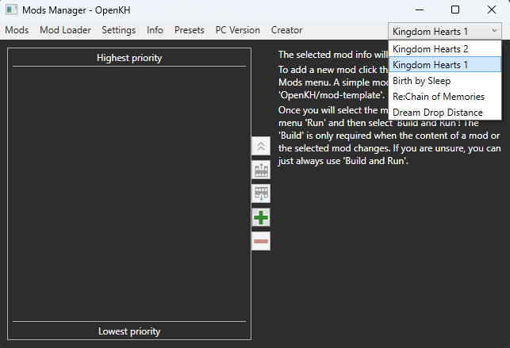
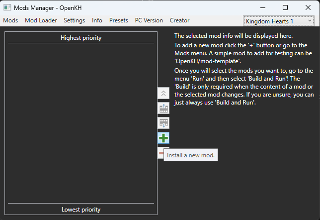
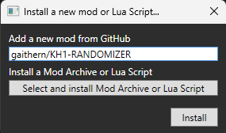
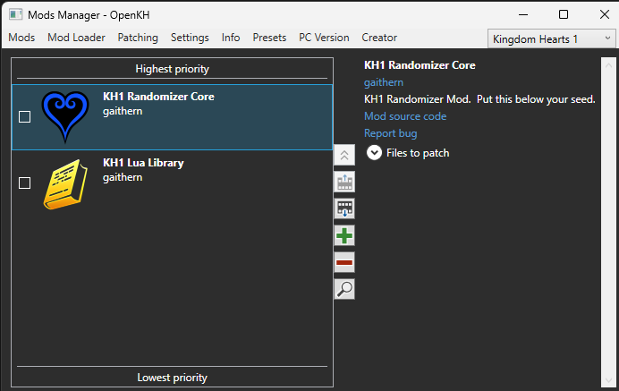
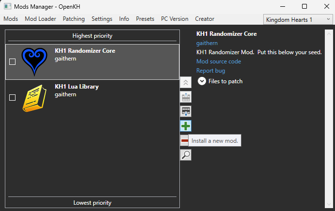
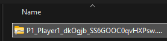
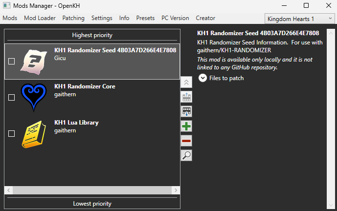

- In your OpenKH folder, find "OpenKh.Tools.ModsManager.exe" and open it.

- Inside the mod manager, ensure you have "Kingdom Hearts 1" select in the dropdown menu in the top right corner of the window.

- Click the green plus icon to install a new mod.

- First, enter "gaithern/KH1-LUA-LIBRARY" in the field labelled "Install a new mod from GitHub" and click "Install".

- You should see the following mod appear:

- Next, click the green plus again and enter "gaithern/KH1-RANDOMIZER" in the same field and click "Install".

- You should see the following mod appear:

- Click the green plus icon again to install another mod.

- Choose "Select and install Mod Archive or Lua Script".

- Navigate to your seed mod downloaded in the "Generating a Seed" step and select it.

- Find your new mod in your mod list.

- Click the boxes near the mod names to enable each mod.

- When ready to play, go to "Mod Loader" at the top pane and choose "Build and Run".

- KH1 should open with the newly installed mods.